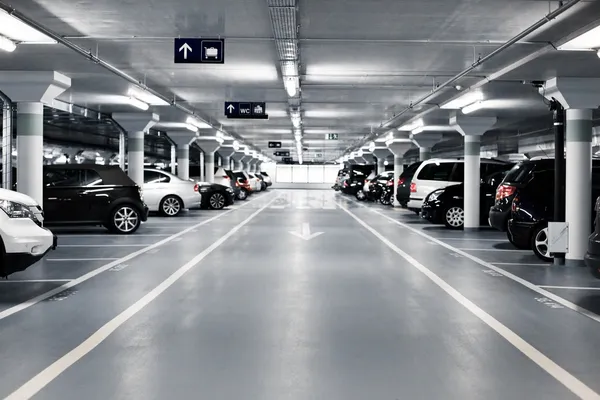

<ion-header>
  <ion-toolbar>
    <ion-title class="ion-text-center">AjoT Parking - Stalls Management</ion-title>
    <ion-button slot="end" style="margin-right: 10px;" [routerLink]="['/parking']">
      <ion-icon name="log-out-outline"></ion-icon>
    </ion-button>
  </ion-toolbar>
</ion-header>

<ion-content>

  <ion-grid class="full-w-h">
    <ion-row class="full-w-h">
      <ion-col size="12" size-sm="2" style="border-right: 2px solid black;">
        
        <ion-row class="ion-justify-content-center" style="margin-top:25px">
          <ion-text style="font-size: 20px;">Stalls available: {{parking?.occupiedStalls}} / {{parking?.nStalls}}</ion-text>
        </ion-row>

        <ion-row class="ion-justify-content-center" style="margin-top:25px">
          <ion-button (click)="changeStatusParking()">{{ parking?.isOpen === true ? 'Close' : 'Open' }}</ion-button>
        </ion-row>
      </ion-col>

      <ion-col size="12" size-sm="10">

        <ion-grid>
          <ion-row class="ion-justify-content-end">
            <ion-button (click)="openModalAddStall()">
              <ion-icon name="add-outline" slot="start"></ion-icon>Add stall
            </ion-button>
          </ion-row>

          <br>

          <ng-container *ngFor="let stall of stallsArray">
            <ion-row class="ion-align-items-center" style="border-bottom: 2px solid black;">
              <ion-col size="12" size-sm="auto">
                <ion-text>Stall n° {{stall.id}}</ion-text>
              </ion-col>
              <ion-col>
                <ion-text>{{ stall.isFree === true ? 'Free' : 'Busy' }}</ion-text>
              </ion-col>
              <ion-col size="12" size-sm="1.5" class="ion-text-right">
                <ion-button (click)="deleteStall(stall.id)" color="danger">
                  <ion-icon name="close-outline" slot="start"></ion-icon>
                  Delete</ion-button>
              </ion-col>

              <ion-col size="12" size-sm="1.5" class="ion-no-padding">
                <ion-button expand="block" (click)="openModalInfo(stall.id)">
                  <ion-icon name="search-outline" slot="start"></ion-icon>
                  See Info</ion-button>
              </ion-col>
            </ion-row>
          </ng-container>

        </ion-grid>

      </ion-col>
    </ion-row>

  </ion-grid>

</ion-content>